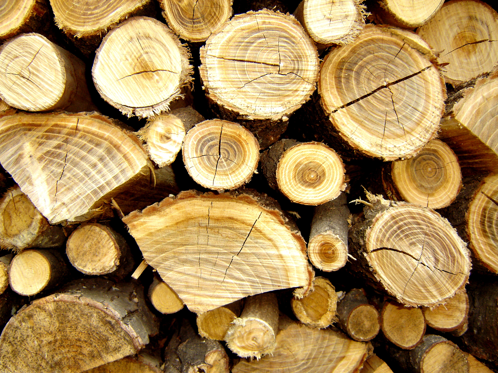

Stump Removal

Title: A Comprehensive Guide to Stump Removal: Techniques, Considerations, and Environmental Impact
Introduction:
Stumps can be unsightly obstacles in yards, parks, and forests. Whether left behind by tree removal or natural occurrences like storms, they can pose hazards, hinder landscaping efforts, and even impede new plant growth. Removing stumps requires careful consideration of various factors, including the size of the stump, available equipment, environmental impact, and desired outcome. This comprehensive guide aims to explore the techniques, considerations, and environmental implications of stump removal.
I. Understanding Stump Anatomy and Types:
A. Anatomy of a Stump:
1. Root system: Extends beneath the ground, varying in depth and complexity depending on the tree species.
2. Stump body: The portion of the tree trunk remaining above the ground after tree removal.
B. Types of Stumps:
1. Freshly cut stumps: Result from recent tree removal, often easier to remove due to softer wood.
2. Old stumps: Stumps left behind for an extended period, may have undergone decomposition and are more firmly rooted.
II. Stump Removal Techniques:
A. Manual Stump Removal:
1. Digging: Utilizing shovels, picks, and mattocks to excavate the stump and its root system.
2. Hand tools: Axes, pry bars, and chainsaws for cutting away roots and breaking up the stump.
B. Mechanical Stump Removal:
1. Stump grinders: Machines equipped with rotating cutting disks to grind stumps and roots below ground level.
2. Excavators: Heavy machinery used to uproot large stumps, suitable for commercial and industrial applications.
C. Chemical Stump Removal:
1. Herbicides: Application of chemicals to accelerate stump decomposition, gradually breaking down the wood.
2. Eco-friendly options: Environmentally safe products containing potassium nitrate or glyphosate for slow decomposition.
III. Factors Influencing Stump Removal:
A. Stump Size and Complexity:
1. Small stumps: Easily removed with manual tools or small stump grinders.
2. Large stumps: Require heavy machinery or professional services due to extensive root systems.
B. Site Accessibility:
1. Terrain: Considerations for steep slopes, tight spaces, and obstacles affecting equipment maneuverability.
2. Proximity to structures: Potential damage to buildings, utilities, or underground pipes during stump removal.
C. Cost and Budget:
1. Equipment rental fees versus hiring professional stump removal services.
2. Long-term savings versus immediate costs of different removal methods.
IV. Environmental Considerations:
A. Impact on Surrounding Vegetation:
1. Risk of root damage to nearby trees and plants during mechanical removal.
2. Potential for soil disturbance and erosion affecting ecosystem stability.
B. Soil Health:
1. Decomposition process releasing nutrients back into the soil.
2. Soil compaction from heavy machinery and its implications for plant growth.
C. Ecological Footprint:
1. Carbon footprint associated with fuel consumption and emissions from mechanical equipment.
2. Use of eco-friendly stump removal methods to minimize environmental harm.
V. Post-Removal Considerations:
A. Site Restoration:
1. Filling the stump cavity with topsoil and compost to encourage new plant growth.
2. Planting grass, shrubs, or trees to restore the landscape aesthetic.
B. Disposal of Stump Debris:
1. Recycling wood chips for mulch or composting.
2. Proper disposal methods for chemical-treated stump debris to prevent environmental contamination.
VI. Conclusion:
Stump removal is a multifaceted process requiring careful planning and consideration of various factors. From selecting the appropriate removal technique to mitigating environmental impact and restoring the site post-removal, each step contributes to the overall success of the endeavor. By understanding stump anatomy, employing suitable removal techniques, and prioritizing environmental sustainability, individuals can effectively address the challenges associated with stump removal and reclaim their outdoor spaces.